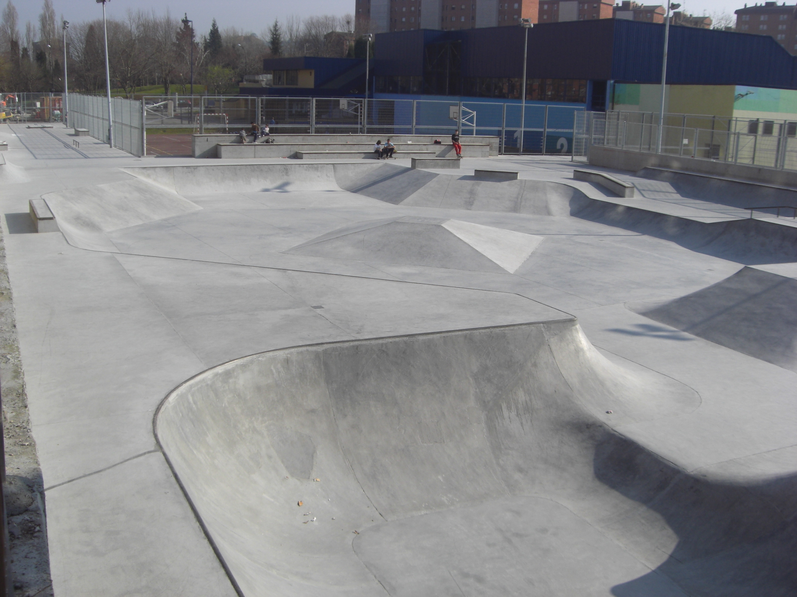
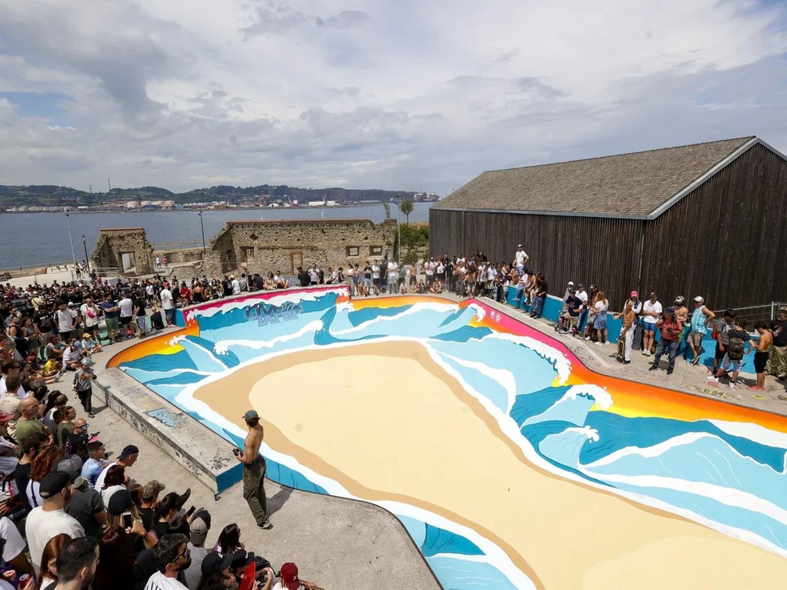
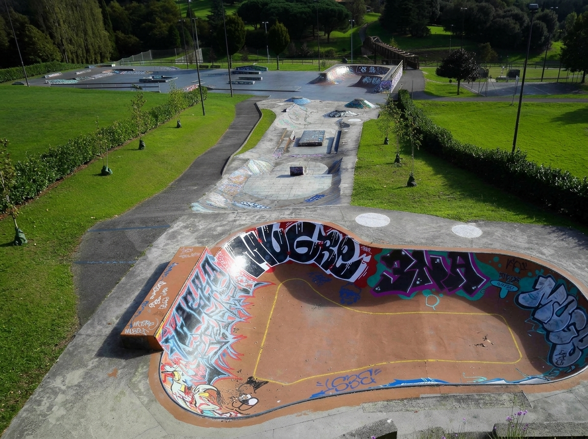
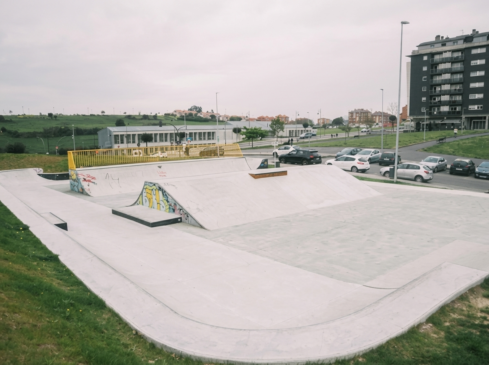
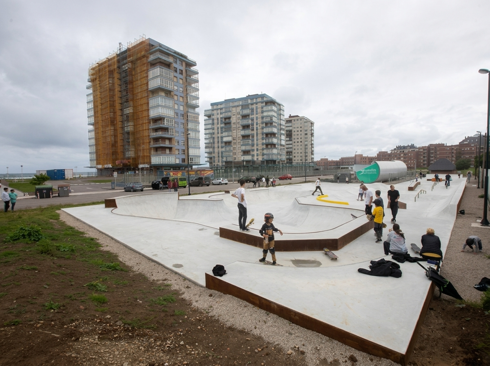
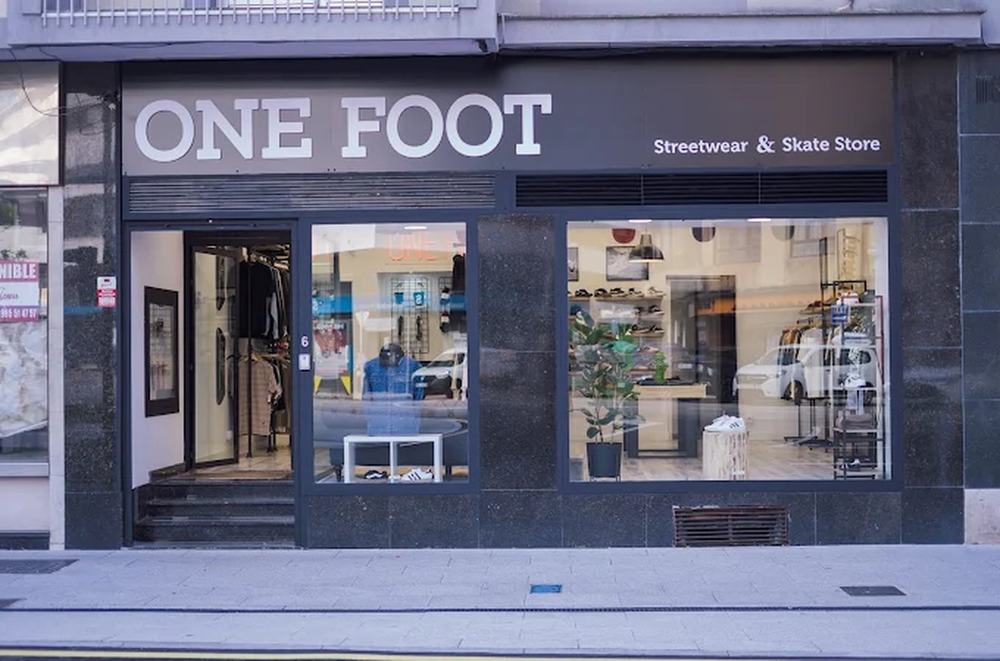
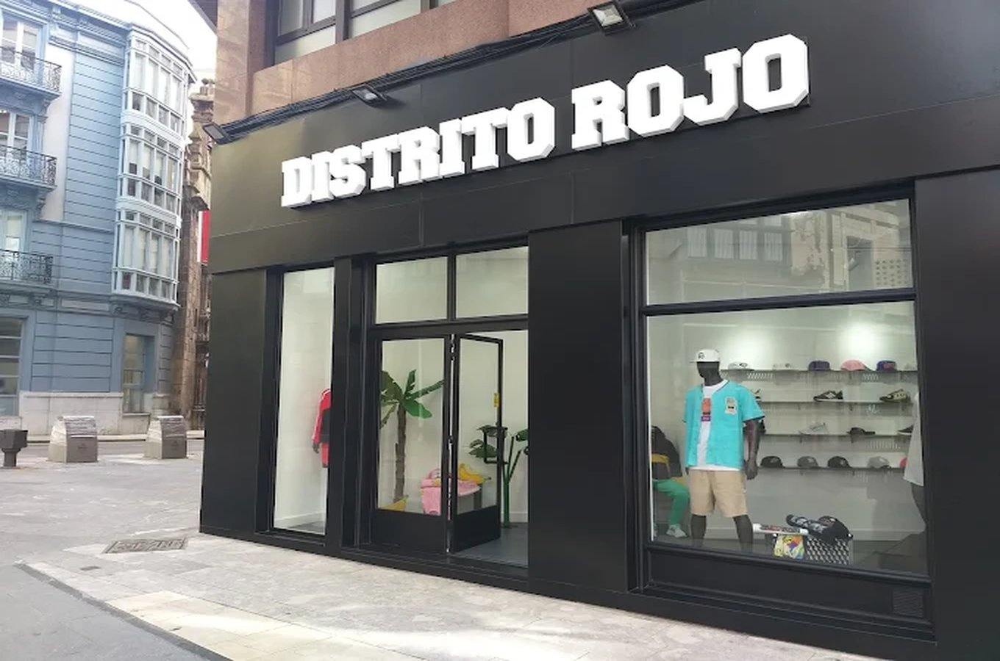
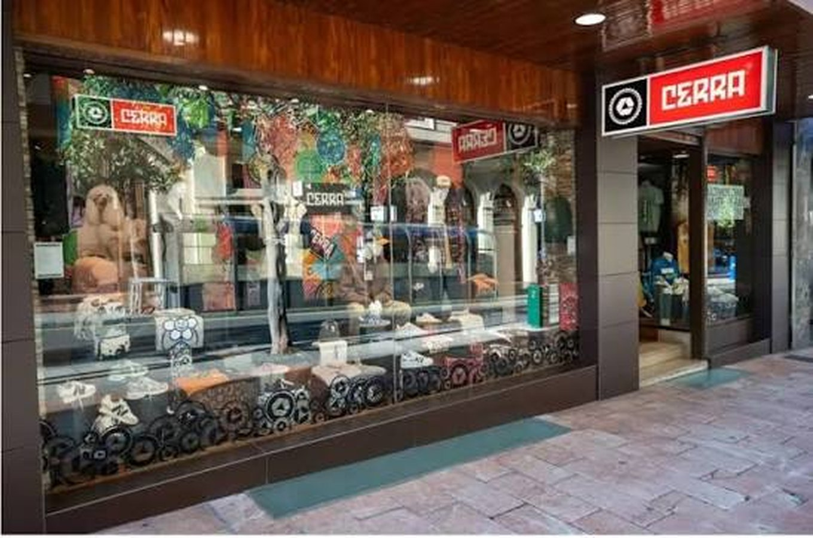

Skatepark de Avilés
Un punto de encuentro para practicar skate y compartir trucos.
Las Fiestas de El Bollo de Avilés traen en el ámbito deportivo el campeonato de Skate 'El Bollo de Avilés', un evento que se ha convertido en todo un referente en la escena skater nacional por estas fechas y que celebra ya su XVI edición.
Al igual que en previas ediciones, los premios serán de igual cuantía tanto para la categoría femenina como la masculina. Se repartirán 1.200 euros en metálico y muchos premios en material deportivo. Se celebra en la pista de skate de La Magdalena en Avilés.
En la categoría OPEN los premios para los puestos 1º, 2º y 3º serán de 300, 200 y 100 euros, respectivamente (iguales para mujeres y hombres). Hay premios con material skate desde el primero al quinto puesto en todas las categorías.
La asistencia de participantes venidos de toda España ha convertido este evento en un referente. La organización, que cuenta con la colaboración del Ayuntamiento de Avilés que incluye el campeonato en la programación deportiva de las fiestas, estima la participación en unas 80 personas procedentes, además de Asturias de otros lugares de España como Madrid, País Vasco, Cantabria o Galicia.
Además de la categoría grande OPEN, habrá competición a nivel SUB-10 y a nivel SUB-16, y de mayores de 40 años, tanto masculino como femenino. Habrá premios de material deportivo para los ganadores y ganadoras.
La continuidad del Skate El Bollo mantiene viva de forma importante la escena del skate a nivel local y regional. Las nuevas generaciones esperan ansiosas a 'El Bollo de Avilés' y poder demostrar las habilidades adquiridas durante este tiempo, a la vez que ven pasar por su skatepark local a los grandes nombre del skate a nivel nacional.
Asturias cuenta con espacios para practicar skate en distintas ciudades. Aquí tienes una pequeña muestra de los skateparks de Avilés, Gijón, Oviedo, Las Vegas y Salinas.

Un punto de encuentro para practicar skate y compartir trucos.

Un espacio amplio para patinar cerca del paseo marítimo.

Una pista rodeada de naturaleza para disfrutar del skate.

Un buen lugar para entrenar y pasar la tarde sobre la tabla.

Una pista junto a la costa para disfrutar de una sesión de skate.

Avilés — datos de ubicación pendientes.

Asturias — datos de ubicación pendientes.

Asturias — datos de ubicación pendientes.